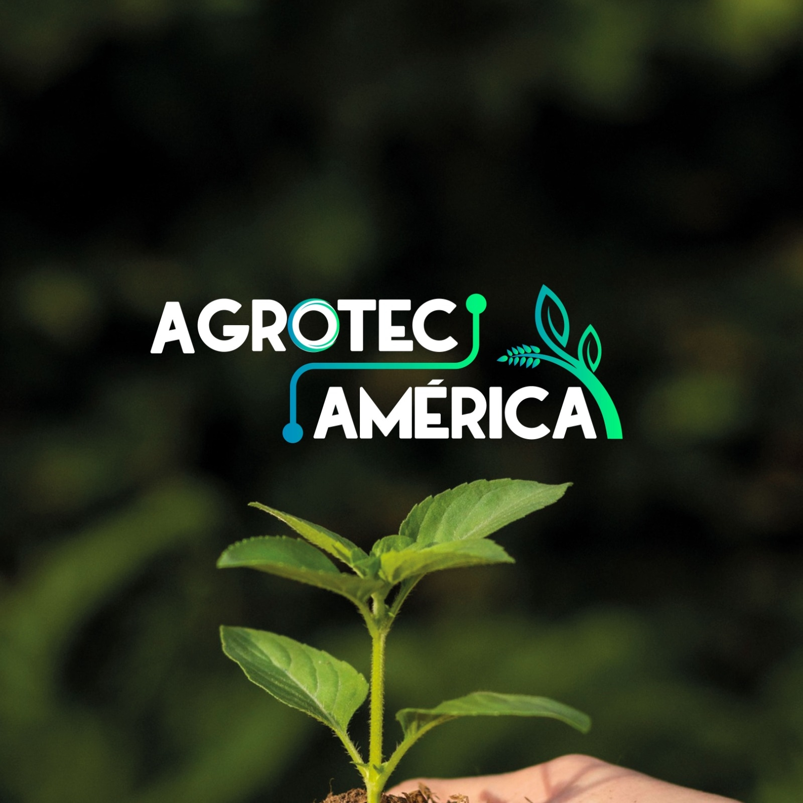
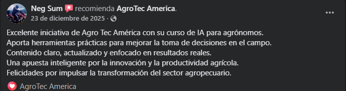
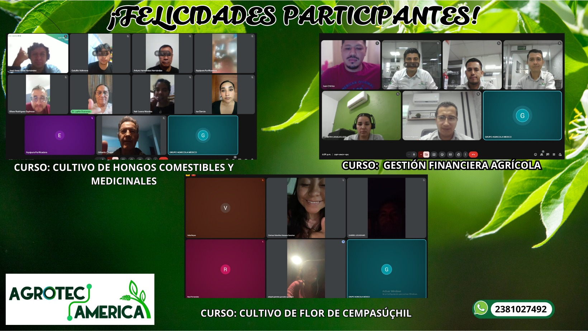
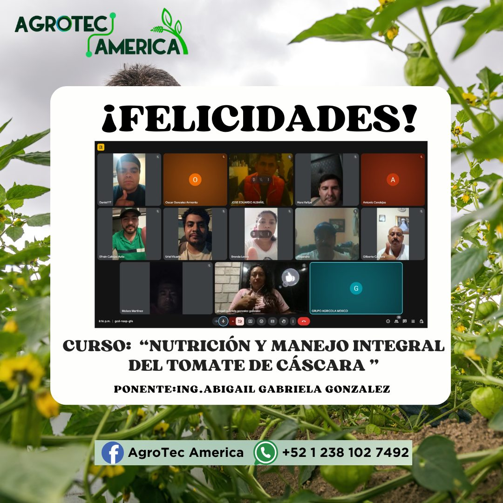
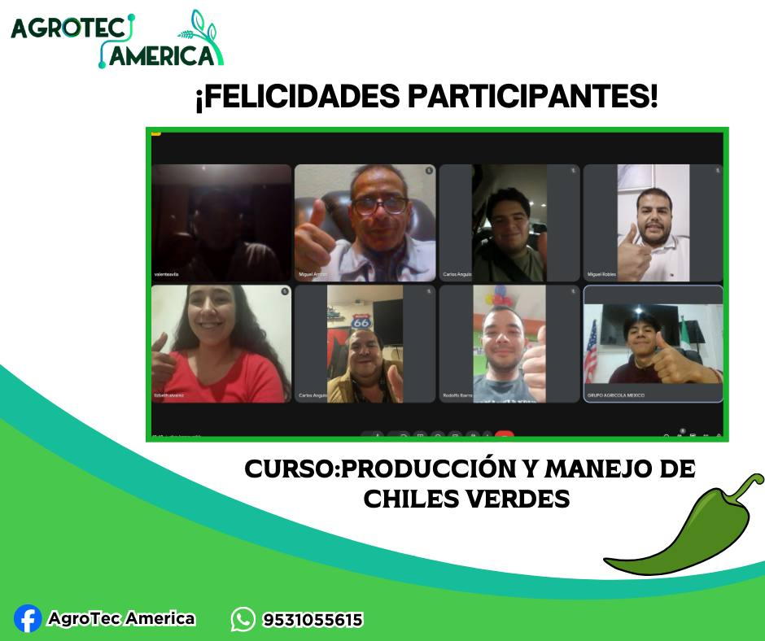

+2000
Alumnos capacitados en programas especializados
En AGROTEC AMERICAN impulsamos el desarrollo del sector agropecuario con cursos profesionales en vivo, acceso a clases grabadas, certificado con valor oficial, QR y folio único, además de asesoría técnica enfocada en resultados reales.
Capacitamos a productores, técnicos y empresas del sector agropecuario con programas especializados, prácticos y modernos.
Alumnos capacitados en programas especializados
Cursos profesionales impartidos
Formación para productores, técnicos y empresas
Clases en vivo, grabaciones y acceso desde cualquier lugar
Explora nuestro catálogo completo de capacitación agrícola. Cada curso incluye clases en vivo, contenido pregrabado, certificado con valor oficial, QR y folio único.
Una experiencia de capacitación completa, moderna y enfocada en resultados reales para el sector agropecuario.
Sesiones impartidas por especialistas con enfoque técnico y práctico.
Acceso adicional a contenidos para reforzar el aprendizaje.
Constancia con valor oficial, QR y folio único de validación.
Repite las clases y consulta el contenido cuando lo necesites.
Comparte experiencias con otros profesionales del sector agrícola.
Temas enfocados en decisiones, procesos y resultados de campo.
AGROTEC AMERICAN integra formación especializada y consultoría agrícola para acompañar a productores, técnicos y empresas en la mejora de procesos, toma de decisiones, profesionalización y desempeño en campo.
La experiencia de nuestros participantes fortalece la confianza en cada programa de formación.





Compartimos algunos momentos de quienes han confiado en AGROTEC AMERICAN para fortalecer su preparación profesional.







Capacítate con AGROTEC AMERICAN y accede a programas especializados, clases en vivo, grabaciones y certificación validable.